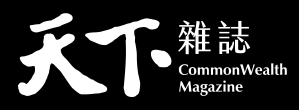

標誌基本規範
此處所標示之天下標誌格線圖，明確標示精確的尺寸與各元素之間的關係。使用標誌時，應嚴格遵守此規範。其他標誌組合，僅可使用本規範所提供的樣式，不可自行定義與重繪。
一、尺寸規範
平面產品：標誌縮小使用時，如寬度小於3公分，使用無英文版標誌。最小寬度不得小於2公分。
數位產品：標誌縮小使用時，如寬度小於80px，使用無英文版標誌。最小寬度不得小於68px。
本方格線製圖標誌，因應無法以電子圖檔輸出或製作戶外超大型廣告等之特殊狀況下使用，同時可以依據此方式檢查製作物是否符合標準規格。
二、安全範圍
標誌基本組合使用時，須考量視覺獨立性及顯著性，以塑造鮮明的印象，避免造成不良的視覺效果。
- 禁止將基本組合作任何變形。
- 禁止任何改變基本組合之色彩。
- 基本組合與畫面其他元素應保持安全距離，避免基本組合辨識度不佳。
三、色彩規範
標誌標準色為紅色。因應平面與數位產品需求，使用不同色彩模式，及其標準色值／色碼。如需灰階呈現，限使用黑色。
標準色
CMYK－10, 100, 100, 0
RGB－214, 12, 24
HEX－D60C18
PANTONE－186 C
黑色

CMYK－0, 0, 0, 100
RGB－0, 0, 0
HEX－000000
四、標誌運用規範
標誌應優先使用標準版本。但可視標誌背景之色彩明度、彩度與複雜度，調整呈現方式如下。
標誌中的天下字樣，僅限使用全紅、全白、全黑，且不可交錯使用。
五、標誌不當使用範例
標誌在任何應用上，均應以標準版本之形象出現，使之易於識別及統一視覺形象。不得更改造形、顏色，導致混淆識別形象。
不可任意於標誌加上任何框線
不可任意更換標誌顏色
不可使用只有外框線的標誌
不可使用有外框線的標誌
不可任意使用漸層方式呈現標誌
六、集團標誌排列順序
天下集團的標誌排列順序為：天下／康健／親子／出版／學習